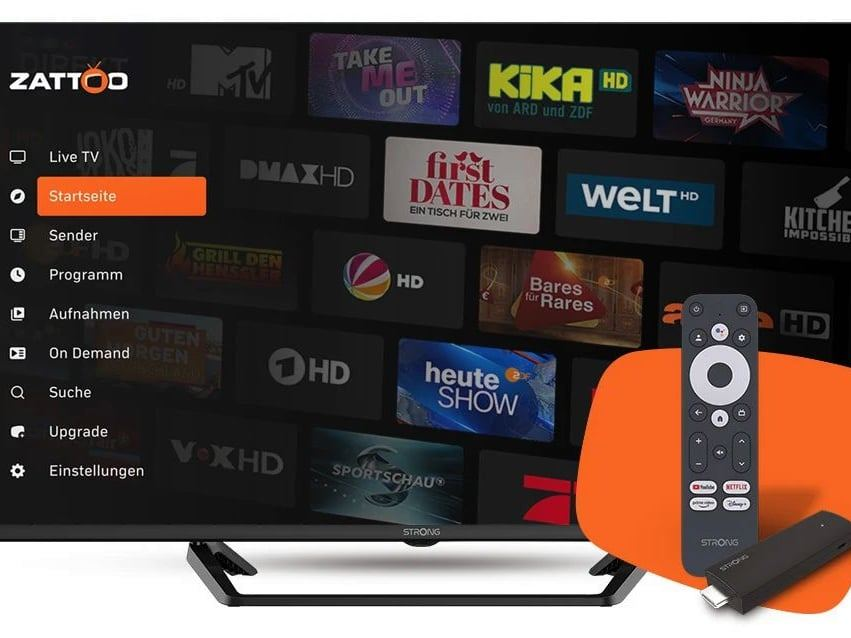

Ausgabe
10. Oktober 2026
5 relevante Meldungen aus 15 neuen · Lesezeit ca. 3 Minuten

Streaming-Anbieter Zattoo erweitert deutsches TV-Senderportfolio Zattoo · Priorität 3/5 Wo steht Vodafone? Apple iPhone 17 Pro 512 GB 278,13 €1&1 unter Vodafone (2.015,79 €) Band XS · 24 Raten · Preise vom 10. Oktober 2026 Promo 40 neu · 2 enden bald Wechsel- oder Altgerätprämie Telekom Deutschland Mobilfunk-Cashback Aktion Stand 10. Oktober 2026
Auf einen Blick
- Regionale Festnetz-Anbieter wie Briant Broadband drängen in Großbritannien mit flexiblen eSIM-Tarifen in den Mobilfunkmarkt, um wettbewerbsfähige Fest-Mobil-Kombinationen anzubieten.
- Das indische Start-up Torchit hat eine kabellose Künstliche-Intelligenz-Brille für Sehbehinderte mit über 40.000 Nutzern auf den Markt gebracht.
- Europäische und asiatische Anbieter treiben den Ausbau von Wholesale-Plattformen, Glasfaserprojekten und TV-Streaming-Diensten voran.
Themen der Woche

Das Wichtigste
In der europäischen und asiatischen Telekommunikationslandschaft prägen diese Woche vor allem Initiativen zu Netzausbau, Wholesale-Plattformen und Hardware-Innovationen das Bild. Kleinere regionale Netzbetreiber wie Briant Broadband in Großbritannien nutzen Wholesaler-Plattformen, um ohne eigene Infrastruktur rasch in den Mobilfunkmarkt einzusteigen und monatlich kündbare 5G-Tarife anzubieten. Ergänzend dazu treiben staatlich geförderte Programme wie das britische Projekt Gigabit den ländlichen Glasfaserausbau voran. Im asiatischen Raum setzen Start-ups wie Torchit auf spezialisierte Hardware-Lösungen mit künstlicher Intelligenz für den Alltag. Insgesamt zeigt sich ein anhaltender Trend zur flexiblen Bündelung von Diensten und zur Erschließung neuer Kundengruppen jenseits klassischer Kernprodukte.
Was wichtig ist
-
Briant Broadband
Regionaler Glasfaser-Anbieter startet eigene 5G-Mobilfunktarife
Was das für uns heißtMonatlich kündbare 5G-Mobilfunktarife von lokalen Glasfaseranbietern - zeigt den Druck hin zu flexiblen Fest-Mobil-Bundles auch in kleineren Regionen.
Die wichtigsten Meldungen
Briant Broadband - Regionaler 5G-Mobilfunkstart (Tarif/Pricing, Dringlichkeit 4/5) Der britische Festnetz-Anbieter Briant Broadband bietet in Kooperation mit der Plattform data2go.mobi ab sofort eigene 5G-Mobilfunktarife über eSIM und physische SIM-Karten an Quelle. Die Verträge sind monatlich kündbar und richten sich an Kunden, die günstige und flexible Tarife suchen Quelle. Damit reagiert das Unternehmen auf den wachsenden Druck, Komplettpakete aus Festnetz und Mobilfunk anzubieten Quelle.
Connect Fibre - Ausweitung des Projekt Gigabit (Netz/Technologie, Dringlichkeit 3/5) Die britische Regierung und der alternative Netzbetreiber Connect Fibre haben den Vertrag für das Breitband-Ausbauprojekt im nordöstlichen Staffordshire erweitert Quelle. Es kommen 739 zusätzliche Haushalte hinzu, wodurch das Gesamtvolumen auf 6.702 Anschlüsse bei einem Auftragswert von rund 17,6 Millionen Pfund steigt Quelle. Das Projekt unterstreicht die staatliche Subventionierung von Glasfasernetzen in ländlichen Regionen Quelle.
Exascale - Nexus Wholesale-Plattform (Netz/Technologie, Dringlichkeit 3/5) Der britische Breitbandanbieter Exascale hat die Nexus-Plattform zur Steuerung von Wholesale-Diensten sowie das Management-System Atlas eingeführt Quelle. Ziel ist es, den Zugang zu eigener und fremder Glasfaser auf Basis offener Standards zu erleichtern und den Netzbetrieb durch künstliche Intelligenz zu optimieren Quelle.
Zattoo - TV-Senderportfolio erweitert (Produktlaunch, Dringlichkeit 3/5) Der Streaming-Anbieter Zattoo hat sein deutsches Fernsehangebot um sechs neue Sender aufgestockt und umfasst nun über 250 Programme Quelle. Damit reagiert das Unternehmen auf den intensiven Wettbewerb im Bereich des internetbasierten Fernsehens Quelle.
Torchit - Jyoti KI-Brille (Produktlaunch, Dringlichkeit 2/5) Das indische Start-up Torchit hat eine kabellose Version seiner Künstliche-Intelligenz-Brille für sehbehinderte Menschen auf den Markt gebracht Quelle. Das Gerät wandelt visuelle Informationen in Audiosignale um, bietet sechs verschiedene Erkennungsmodi und verzeichnet in Indien bereits mehr als 40.000 Nutzer Quelle.

Europa
In Europa treiben kleinere Netzbetreiber und alternative Internetdienstanbieter den Ausbau von Glasfaserinfrastrukturen und flexiblen Mobilfunkdiensten voran. Gleichzeitig reagieren Streaming-Plattformen auf den harten Wettbewerb mit einer Ausweitung ihrer TV-Inhalte.
Der britische Festnetz-Anbieter Briant Broadband startet mit Unterstützung von data2go.mobi eigene 5G-Mobilfunktarife in monatlich kündbaren 30-Tage-Verträgen Quelle. Connect Fibre weitet im Rahmen des Projekts Gigabit den Glasfaserausbau im nordöstlichen Staffordshire um 739 zusätzliche Haushalte auf insgesamt 6.702 Anschlüsse aus Quelle. Exascale bereitet mit der Nexus-Plattform den offenen Wholesale-Zugang für Partnernetze vor Quelle. Zattoo stockt sein deutsches Fernsehportfolio um sechs Sender auf über 250 Programme auf Quelle.

Deutschland
- Deutsche Telekom Deutsche Telekom treibt derzeit massiv strategische Initiativen voran, darunter der Ausbau von KI-Anwendungen mit konkreten Finanzzielen sowie Netz- und Sicherheitskooperationen in Europa.
- Telefónica / O2 Telefónica konzentriert sich aktuell auf den strategischen Ausbau digitaler Dienste, die Weiterentwicklung von Partnerschaften wie im Bereich Sicherheitslösungen sowie technologische…
- 1&1 1&1 treibt aktuell sowohl im Festnetz als auch im Mobilfunk seine Marktposition durch strategische Partnerschaften, Hardware-Innovationen und personelle Verstärkung voran.

Asien
In Asien treiben Technologie-Start-ups spezialisierte Hardware-Anwendungen mit künstlicher Intelligenz voran, um die Barrierefreiheit im Alltag von Menschen mit Einschränkungen zu verbessern.
Das indische Start-up Torchit hat seine kabellose Jyoti-KI-Brille mit Funktionen zur Umwandlung visueller Reize in Audiosignale positioniert und damit bereits über 40.000 Nutzer erreicht Quelle.

Muster der Woche
- Feste Netze drängen in den Mobilfunk: Regionale Festnetz-Anbieter wie Briant Broadband nutzen Wholesale-Plattformen, um eigenständige Mobilfunktarife anzubieten und Komplettpakete zu schnüren.
- Spezialisierte KI-Hardware: Junge Unternehmen wie Torchit entwickeln tragbare Hardware-Lösungen mit integrierter künstlicher Intelligenz für konkrete soziale Anwendungsfälle.

Worauf wir warten
0 von 5 in Bewegung
Kippt die Preisuntergrenze im deutschen Markt?
Eine Unlimited-Flat unter 35 Euro oder ein Anschlusspreis von null verschiebt die Untergrenze fuer das ganze Portfolio - und beides wird selten als Pressemitteilung angekuendigt.
- Unlimited-Tarif unter 35 Euro ruhend
- Anschlusspreis faellt weg beobachtet o2 erhöht Anschlusspreis für Tarif-Variante auf 39,99 Euro o2 · 2026-10-09
- Preiserhöhung angekündigt ruhend
Wird Satellit zum Endkundenprodukt?
Solange Direct-to-Cell ein Notrufdienst ist, ist es Technik. Sobald es ein buchbarer Tarifbestandteil mit Preis wird, ist es Portfolio.
- Direct-to-Cell wird buchbar beobachtet AST plant Direkt-Satellitenanbindung für Smartphones bis 2027 AST SpaceMobile · 2026-10-09 5G-Satellitenstandards ermöglichen flächendeckende direkte Mobilfunkverbindungen BICS · 2026-10-09
- Satellit im Tarif eines europäischen Anbieters beobachtet Iliad drängt auf Europas dritten Platz Iliad · 2026-10-07 Iliad drängt auf Europas dritten Platz Iliad · 2026-10-02
Erodiert eSIM das Roaming-Geschäft?
Reise-eSIMs nehmen Roaming-Erloese ab, ohne dass ein Betreiber den Vertrag sieht. Die Bewegung ist gut belegt, der Zeitpunkt nicht.
- Travel-eSIM-Anbieter wächst oder wird gekauft ruhend
- Roaming-Preise oder -Erlöse verändern sich beobachtet Bharti Airtel erhöht Postpaid-Preise um 50 Rupien Bharti Airtel · 2026-10-09 Air India und Tata starten gebrandete Travel-eSIM Tata Communications · 2026-10-09
Wird KI zum bezahlten Tarifbestandteil?
Eine KI-Lizenz im Tarif ist der erste Differenzierungs-Hebel seit Jahren, den Kunden auf der Rechnung sehen - und der erste, bei dem Vodafones Wettbewerber im deutschen Markt vorgelegt haben.
- KI-Assistent im Tarif enthalten beobachtet OpenAI führt neue Werbeformate in ChatGPT ein OpenAI · 2026-10-09
- KI-Gerät eines Netzbetreibers ruhend
Zwingt die Regulierung zu einer Portfolio-Änderung?
Vorgaben zu Preisklauseln, Vertragslaufzeiten oder Kuendigungsfristen wirken unmittelbar auf jeden Tarif - und sie kommen mit Vorlauf, wenn man den Vorlauf beobachtet.
- Vorgabe zu Preisklauseln oder Laufzeiten beobachtet Digi verlangt monatliche Miete für 4K-Receiver und Festnetztelefone Digi · 2026-10-09
- Digital Networks Act / TKG-Novelle beobachtet Verbände warnen vor zu starker Regulierung bei Glasfaser BREKO · 2026-10-09 Verbände fordern Vorleistungszugang im EU Digital Networks Act BREKO · 2026-10-09
Diese Ausgabe als Foliensatz 4 Folien, für den Montagstermin